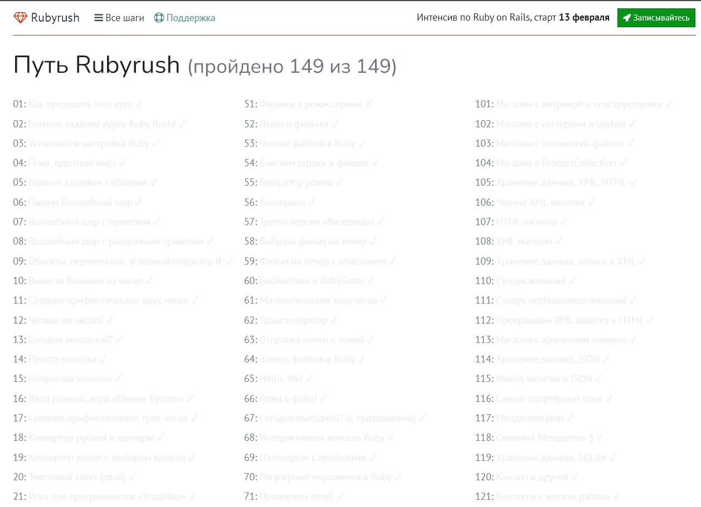

Я начинающий разработчик
Начал обучаться в ноябре 2021 На данный момент, я самоучках. Мне интересно сменить свой род деятельности и развиваться в сторону backend разработки. По сколько я самоучках необходимо было понять путь по которому мне идти и что необходимо знать. Для этого была найдена и немного видоизменена roadmap backend developer. К своему обучению подхожу структурно, прописываю себе недельные спринты по которым учусь все свободное время. Обучаюсь по принципу "опыт -> анализ -> теория -> практика"
Полученные знания/опыт
Ссылки на проекты
Пройденный курс по руби раш
